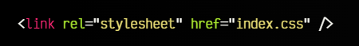
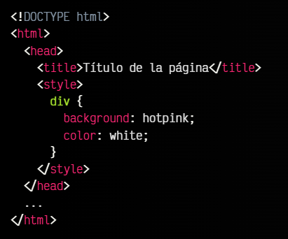
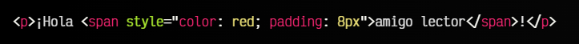

CSS explicandolo de forma "sencilla" es un lenguaje de programacion que estiliza la pagina web, en otras palabras con este lenguaje de programacion vas a poder dar color, forma y margenes entre otros, de manera facil. Con esto se pueden soolucionar los problemas esteticos de la pagina web
Hay tres formas de utilizar el CSS, las he ordenado de la que mas se utiliza hasta la que menos se utiliza.
Este es el CSS externo, basicamente es aplicar el estilo del CSS a tu pagina pero desde un archivo externo que llamaremos "x.css". para hacer esto en tu codigo HTML hay que añadir una linea de codigo que se escribe utilizando la Etiqueta:
Este es el CSS interno o bloque de estilo, aqui lo que se hace es crear una etiqueta donde añadiremos todo el CSS pero esta estara dentro del documento HTML, asi es como se veria:
Este es el CSS en linea, esto es mortal para todo programador, aqui lo que se hace es añadir el estilo dentro de la propia linea: Por ejemplo:
